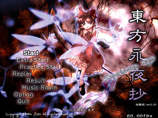

| 動作環境 | |
|---|---|
| 必須環境 | |
| ＯＳ | Windows 98/SE/ME/2000/XP なお、DirectX 8.0 以上がインストールされていること |
| ＣＰＵ | Pentium 以降（もしくは互換）のCPU （推奨 500MH以上） |
| ビデオカード | DirectX8.0以上の DirectGraphic 対応の高速なビデオカード(推奨 VRAM 16M以上) 今のところ正常に動くことが確認取れているビデオカード ・nVIDIA GeForce シリーズ ・ATI RADEON シリーズ 等 |
| 推奨環境 | |
| サウンド | Direct Sound対応のサウンドカード （BGMに MIDIを使用する場合）sc-88Pro(Roland)もしくは上位の MIDI音源 |
| その他 | パッドコントローラ ある程度の弾幕免疫 幻視能力 |